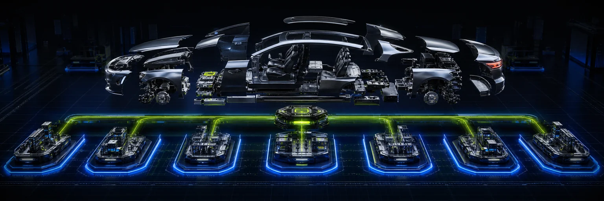

CAR Superapp
Discovery- и architecture-кейс multi-tenant PWA для СТО Узбекистана — от приёмки автомобиля до согласований, медиа, оплаты и клиентского статуса.

Контекст
Что это
CAR Superapp проработан как целевая операционная система автосервиса: сотрудники ведут заказ и работы, клиент видит статус и доказательства, а сеть управляет филиалами, ролями, оплатами, документами и аудитом в одной модели.
Какую проблему решает
Когда приёмка, фотографии, дополнительные работы, согласие клиента и оплата живут в разных чатах, сервис теряет доверие и маржу. Для сети добавляется риск пересечения данных филиалов и неясных полномочий.
Система
Технический стек
Архитектура
Архитектурный контракт предлагает responsive PWA и API как модульный монолит. Для реализации запланированы tenant/branch-границы в PostgreSQL через forced RLS, типизированная модель Prisma, фоновые процессы Redis/BullMQ и outbox/idempotency для интеграций.
Почему именно так
На раннем этапе модульный монолит даёт транзакционную целостность и меньшую эксплуатационную цену, сохраняя доменные границы для будущего выделения сервисов. RLS дублирует проверки приложения там, где ошибка особенно дорога.
Карта системы
Доказательства
Сильные стороны
Проект начинается не с красивого dashboard, а с решений по scope, угрозам, состояниям платежей/медиа/расписания, миграциям и эксплуатации. Целевой масштаб — сеть минимум до 50 филиалов на tenant без смешивания данных.
Что это доказывает
Кейс показывает способность вести большой продукт до кода: discovery, ADR, UX-информационная архитектура, threat model, модель данных, API-контракты и измеримые acceptance/release gates.
Как обеспечивалось качество
QA описан как проверяемый план реализации: cross-tenant/branch негативные сценарии для RLS, contract tests, lint, strict typecheck, dependency audit, build и release gates. Эти проверки являются acceptance-критериями; пройденный CI или production-run не заявляется.
Полная матрица QA-доказательств →Границы
Статус DISCOVERY: подтверждены исследование, архитектура и план проверки, но production foundation, forced RLS, outbox, CI и масштаб до 50 филиалов не выдаются за реализованный результат. Провайдеры, устройства и налоговые сценарии требуют отдельной валидации.
Нужен похожий продукт?
Сначала уточню задачу и ограничения, затем предложу состав работы, этапы и следующий шаг.